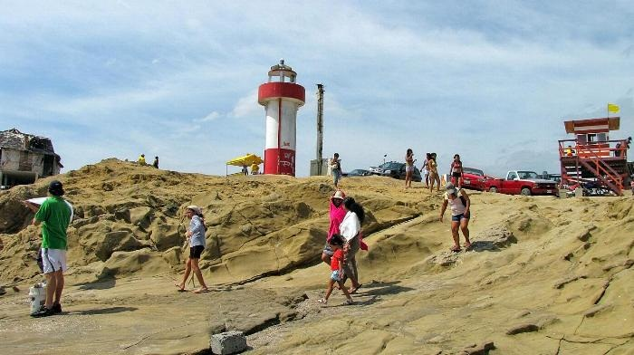

Sitios Turísticos del Cantón Playas
 Sector El HumboltEste es uno de los lugares que atrae mucho a los turistas, ya que en este espacio se ofrecen muchas variedades de platos típicos a precios razonables, sombrillas, parasoles, carpas, para que su estadía llegue a ser muy placentera, además de los juegos playeros que brinda el lugar y que puedas realizar.
Sector El HumboltEste es uno de los lugares que atrae mucho a los turistas, ya que en este espacio se ofrecen muchas variedades de platos típicos a precios razonables, sombrillas, parasoles, carpas, para que su estadía llegue a ser muy placentera, además de los juegos playeros que brinda el lugar y que puedas realizar.
 Sector Casa BlancaEste lugar es exclusivo para quienes tienen propiedad dentro de Ocean Suites y Casa Blanca, aunque realmente no es una Playa privada, los encargados del sitio son los que le dan mantenimiento a la zona de playa.
Sector Casa BlancaEste lugar es exclusivo para quienes tienen propiedad dentro de Ocean Suites y Casa Blanca, aunque realmente no es una Playa privada, los encargados del sitio son los que le dan mantenimiento a la zona de playa.
Sector Playa Puerto EngabaoEs un verdadero paraíso tropical de la costa ecuatoriana, muy conocido por surfistas nacionales y extranjeros. En cualquier momento del año se puede observar el cielo azul y la hermosa y espaciosa playa, lista para disfrutar de la conexión con la naturaleza y de los deportes acuáticos. Es un pueblo pesquero, donde se mantienen vivas las costumbres y tradiciones costeras, el tamaño de sus olas lo convierten en el principal atractivo para los surfistas que ven en este sitio el lugar ideal para practicar dicho deporte, también se conoce a la zona como “Playa Escondida”.
 Sector Playa El PeladoEl Pelado es una agradable y tranquila playa ideal para caminatas y campamentos con deliciosa comida típica.
Cuenta con un agradable clima tropical que permite a todos sus visitantes gozar de un espléndido sol durante la mayor parte del año. Durante los meses de diciembre a abril la temperatura es bastante cálida, teniendo un promedio de 28ºC. De mayo a noviembre, las temperaturas son más templadas, teniendo un promedio de 26ºC.
Playa el Pelado, de arena dorada , oleaje moderado, es un sitio ideal para la práctica de varios deportes terrestres y acuáticos como el surf.
Sector Playa El PeladoEl Pelado es una agradable y tranquila playa ideal para caminatas y campamentos con deliciosa comida típica.
Cuenta con un agradable clima tropical que permite a todos sus visitantes gozar de un espléndido sol durante la mayor parte del año. Durante los meses de diciembre a abril la temperatura es bastante cálida, teniendo un promedio de 28ºC. De mayo a noviembre, las temperaturas son más templadas, teniendo un promedio de 26ºC.
Playa el Pelado, de arena dorada , oleaje moderado, es un sitio ideal para la práctica de varios deportes terrestres y acuáticos como el surf.
Parque InfantilEste fue el primer parque que tuvo el Cantón Playas, gracias a la donación que hubo por parte de la Familia Estrada, aquí se puede realizar todo tipo de actividad deportiva, Indor fútbol, Basket, Volley, Ciclismo, Deportes extremos en el SkatePark. Además de ser un lugar donde puedes recurrir a pasear en familia.
 Parque AltamiraEl Parque Altamira recientemente inagurado a finales del año 2015, es uno de los parques más atrayentes por sus diversos tipos de juegos infantiles que ofrece a los niños del Cantón Playas y sus alrededores; es uno de los modelos a seguir en cuanto a distracción para los niños, ya que se tiene previsto realizar unos similares en diversas partes del Cantón.
Parque AltamiraEl Parque Altamira recientemente inagurado a finales del año 2015, es uno de los parques más atrayentes por sus diversos tipos de juegos infantiles que ofrece a los niños del Cantón Playas y sus alrededores; es uno de los modelos a seguir en cuanto a distracción para los niños, ya que se tiene previsto realizar unos similares en diversas partes del Cantón.
SkateParkSituado en el Parque Infantil, pleno centro del Cantón, se consolida como un núcleo de equipamiento deportivo abierto y público, especialmente vinculado a los deportes extremos, donde puedes practicar bicicleta BMX, Patineta o Patines.